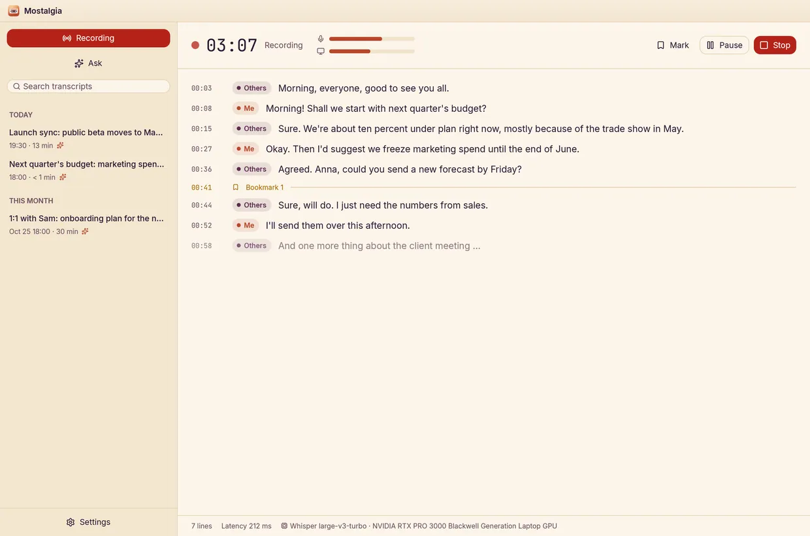

Two tracks, always
Mostalgia records your microphone and the other side of the call (desktop audio) as separate tracks, so every line knows if it came from Me or Others. Readable device names, live level meters, and a nudge when your mic has gone suspiciously quiet.
